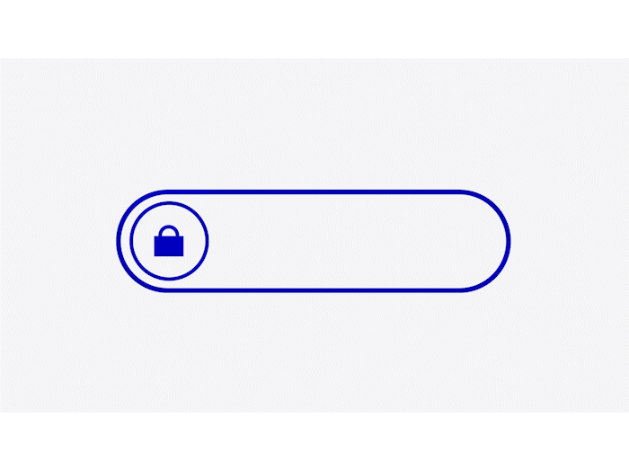

Kniber det med at huske dine forskellige passwords? Eller har du - som mange andre - givet op og benytter det samme password igen og igen?
Gennem 5 vigtige tips vil vi kigge nærmere på, hvorfor genbrug af passwords er en dårlig vane og hvordan du kan blive bedre til at skabe mere sikre passwords. Vi kigger også på en løsning, hvor du aldrig behøver at huske et password igen.
Læs vores fem tips til bedre password sikkerhed og afprøv din viden bagefter.
Velkommen til!

Hvis dit password er blevet lækket - eller du har mistanke herom - er det en rigtig god ide at opdatere din kode med det samme. Tidligere har man opfordret brugere til at opdatere der koder jævnligt for en ekstra sikkerheds skyld. Men det er ikke den bedste ide at opdatere sit password hvis der ikke er nogen anledning til det.
Undersøgelser viser, at hvis man som bruger bliver bedt om at opdatere sit password jævnligt, vil man ofte ende med at genbruge det samme password som tidligere - og blot tilføje et årstal eller en årstid. Dette gør dit password mere forudsigeligt for hackere og er en dårlig ide.

Med de omfattende krav til passwords og den forståelige udfordring ved at huske disse, ender mange personer ofte med at genbruge deres koder igen og igen. Men det er en farligt tilgang.
Årsagen til at genbrug af passwords er så skadeligt er, at hvis en hacker først får adgang til én af dine konti - så har de adgang til alle dem du benytter. Hvis du genbruger dine passwords på tværs af dine private logins og de logins du måtte have i forbindelse med din arbejdsplads bringer du også disse i fare.

Der er ofte et krav om, at et password skal være 8 tegn langt - og det er netop den længde de fleste passwords har. Men et længere password er mere sikkert. Center for Datasikkerhed anbefaler en længde på ikke mindre end 15 tegn.
Denne længde af password kan være svær at huske - særligt når man ikke må genbruge passwords til andre logins.
En måde at lave - og huske - sådan et password på, kunne være at tage det første bogstav af hvert ord i en din yndlingssang fra brusebadet:
Ppdkg,Fd1gdnfs = Pas på den knaldrøde gummibåd, for det en gummibåd der noget for sig
(Ordet “en” er erstattet af tallet 1, linjeskiftet er markeret med et komma samt et efterfølgende stort bogstav)
4
Brug en password manager

En løsning på de omfattende krav til længde og variation i passwords er en password manager. En password manager gemmer både dit brugernavn og din kode, så du ikke behøver at huske det. Når du har brug for at logge ind et sted, giver password manageren dig automatisk adgang.
Der findes forskellige typer af password managere, og det kan være en god ide at finde ud af hvilken en, der passer bedst til dig. Både iOS samt Android har dog allerede indbygget denne funktion i deres system og fungere på tværs af mobile enheder samt computere.
5
Brug et umuligt password

Jo længere væk fra gængse ord og termer dit password er - jo mere sikkert er det. Mange password managere tilbyder at generere et password for dig. Det er helt sikkert en meget tilfældig og lang samling af store og små bogstaver, tegn og tal. Og den vil du nok aldrig kunne huske. Og slet ikke hvis du skal have sådan en kryptisk remse til alle dine logins.
Men pointen med passwordmanageren er netop at den gemmer dit password for dig, og endda i mange tilfælde tilbyder at skrive det ind for dig når du har brug for det. I de tilfælde hvor dit styresystem ikke tilbyder at fylde koden ud - eller du er ved at logge ind på en anden enhed som ikke er din egen - kan du blot åbne din password manager på din telefon og finde den kode frem du skal bruge.
Password manageren på din telefon bruger biometrisk identifikation - altså unikke input fra dig i form af ansigtsgenkendelse eller fingeraftryk. Disse er unikke og kan på den måde garantere at din password managers informationer er sikkert beskyttet - uden du skal huske dit password.
Du kan blive meget klogere på Center for Cybersikkerheds anbefalinger i deres password vejledning her